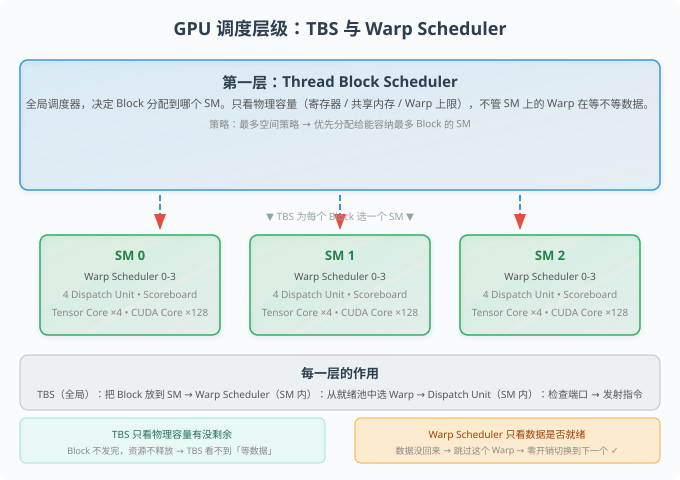

GPU 调度深潜¶
TBS（Thread Block Scheduler）与 Warp Scheduler 两层调度机制，从 Block 分配到指令发射，一次全部讲清楚。 来源：知乎文章 GPU 架构与 CUDA 编程 + Maxwell 的深度追问。 涵盖：TBS、Warp Scheduler、Occupancy、SM Utilization、Dispatch Unit、Port Arbitration、Scoreboard 等核心概念。
场景引入：你写了 1000 个 Block，GPU 怎么决定谁先跑？¶
想象一下：你 launch 了一个 kernel，指定了 1000 个 block。但你的 GPU 只有 80 个 SM（Streaming Multiprocessor）。问题来了——
哪 80 个 block 先上？剩下的 920 个在哪等？上了的 block 什么时候下班？
这就是 TBS（Thread Block Scheduler）的工作。但它不是唯一的调度器——每个 SM 内部还有一个更微型的 Warp Scheduler，负责从驻留的 Warp 中挑「就绪」的来执行。
两层调度，一层管「块分配」，一层管「指令分派」。把它们搞清楚的唯一方法是——一层层拆，别跳过任何一个。
前置概念解释¶
在开始之前，确保下面这些术语你知道。如果哪个不清楚，先看 GPU 硬件调度 和 2026-06-23_triton_programming_model，回头再来看。
核心术语速查¶
| 术语 | 含义 | 负责任务 |
|---|---|---|
| TBS | Thread Block Scheduler，在 GPU 全局层面分配 Block 到 SM | 决定 Block 放哪个 SM |
| Warp Scheduler | SM 内部的指令调度器，每个 SM 有 4 个 | 从驻留 Warp 中选择就绪的 Warp 执行指令 |
| Dispatch Unit | 每个 Warp Scheduler 的下游，负责真正把指令发给计算单元 | 取指令 \u2192 检查端口 \u2192 发射 |
| Scoreboard | Warp 内部的硬件标记表，记录每个 Warp 的数据依赖是否已解决 | 标记 Warp 是否「就绪」、数据是否已到 |
| Port Arbitration | 当多个 Dispatch Unit 想用同一个计算单元时，仲裁谁先用 | 避免多个指令冲撞同一个 Tensor Core/CUDA Core |
| Occupancy | SM 上驻留 Warp 数 / 最大可驻留 Warp 数 | 衡量「延迟隐藏空间」有多大 |
| SM Utilization | SM 的计算单元有多少时间在真正干活 | 衡量延迟隐藏做得怎么样 |
关键框图：SM 内部结构¶

关键对比：TBS 资源可用 vs Warp 就绪¶
| 维度 | TBS「资源可用」 | Warp Scheduler「就绪」 |
|---|---|---|
| 谁在看 | TBS（全局调度器） | Warp Scheduler（SM 内部） |
| 看什么 | SM 的物理容量是否还有剩余（寄存器、共享内存、Warp/Block上限） | 当前 Warp 的指令操作数的数据依赖是否已解决 |
| Warp 在等数据 | 资源已占用，不影响 | 「不就绪」，被跳过，切换到下一个 |
| Block 执行完毕 | 资源释放，可接纳新 Block | 该 Block 的 Warp 已全部退出 |
| 关系 | 两者完全独立，互不干扰 | 一个看物理容量，一个看数据依赖 |
| 关键结论 | TBS 不看 Warp 在干什么 | 只看「能不能塞更多」 |
Occupancy 与 SM Utilization 的对比¶
| 维度 | Occupancy（占用率） | SM Utilization（利用率） |
|---|---|---|
| 衡量什么 | SM 上驻留了多少 Warp（静态容量） | SM 的计算单元有多少时间在真正干活（动态效率） |
| Warp 在等数据 | 算！占着资源就算 | 不算！计算单元闲着 |
| 上限 | 硬件限制（寄存器、共享内存、Warp 上限） | 理论上可以 100% |
| 跟性能的关系 | 高 \u2260 一定快，低 \u2260 一定慢 | 高 \u2248 快（前提是 Occupancy 够） |
| 关键洞察 | 为「延迟隐藏」提供前提条件——得塞够 Warp 才能有机会隐藏延迟 | 衡量延迟隐藏做得怎么样的结果指标 |
一个 Block 能否跨两个 SM？¶
[!important] 不能！ Block 内的所有线程共享同一块
__shared__内存，需要__syncthreads()同步。 如果把 Block 拆到两个 SM 上，共享内存和线程同步全都断掉，CUDA 编程模型直接崩。 一 Block 一 SM，永远如此。
4 个 Dispatch Unit 和 4 个 Tensor Core 是什么关系？¶
[!warning] 关键纠正 不是一一映射！ Dispatch Unit 不直接连到固定的 Tensor Core。它们通过 Crossbar / 分级总线网络连接到多个执行单元。这就像「4 个服务员对着一个共享的备餐台发订单」，而不是「4 个服务员各自独占 1 个炉灶」。
核心讲解：两层调度机制¶
第一层：TBS（Thread Block Scheduler）¶
TBS 的工作：把 Block 分配给 SM。
- 决策依据：SM 的物理容量（寄存器文件大小、共享内存大小、最大可驻留 Warp 数 / Block 数）
- 策略：「最多空间策略」——优先把 Block 分配给能容纳最多 Block 的 SM
- 关键细节：一个 Block 被分配到 SM 后，其所有资源（寄存器、共享内存）都被分配并锁定。无论 Block 里的 Warp 在干什么，这些资源一直占用到 Block 执行完毕才释放
资源可用怎么判断？
TBS 在分配时检查的是：这个 SM 还有没有剩余的容量可以再塞一个 Block，而不是「这个 SM 上还有没有空闲的 Warp 在等指令」。
如果 SM 最多驻留 64 个 Warp，当前已驻留 60 个（分布在多个 Block 中）。新来一个 Block 需要 4 个 Warp。60 + 4 \u2264 64，容量没超，TBS 就会把 Block 安排到这个 SM 上。即使这 60 个 Warp 全部在等内存数据、没有一个在执行指令，SM 的物理资源已经被分配出去，不会因为「没人执行」就释放掉。
第二层：Warp Scheduler（SM 内部微调度）¶
Warp Scheduler 的工作：从驻留的 Warp 中选「就绪」的来执行指令。
零开销上下文切换¶
文章里原话说：
"一旦一个线程块在 SM 上启动，它的所有 Warp 就一直驻留，直到执行完成。所有 Warp 的上下文（程序计数器 PC、寄存器状态）都已加载到 SM 的硬件中，这些资源和状态会一直保留，直到这个线程块中的所有线程都执行完毕。"
当一个指令的操作数未就绪（比如 load 还没从全局内存返回），发生一个「上下文切换」——但因为是 Warp 状态一直在线，切换不需要「保存」和「恢复」，零开销。
就绪池¶
每个 SM 有 4 个 Warp Scheduler，每个时钟周期各自从共享的就绪 Warp 池中选一个 Warp 发指令。
[!important] 关键 4 个 Scheduler 共享一个就绪池，不是每个 Scheduler 有自己专属的子集。 一个 Warp 不挂在任何特定 Scheduler 上——它在就绪池中，被哪个 Scheduler 选中就由哪个发指令。
四种 Warp 调度策略（扩展知识）¶
| 策略 | 全称 | 行为 | 适用场景 |
|---|---|---|---|
| RR | Round-Robin | 轮流从就绪池中取 Warp | 通用，默认策略 |
| LRF | Least Recently Fetched | 优先取最久没被取过的 Warp | 避免 Warp 饿死 |
| FAIR | Fair | 保证每个 Warp 大致公平的调度机会 | 负载均衡 |
| CAWS | Criticality Aware | 根据 Warp 的关键性（是否在关键路径上）决定优先级 | 优化延迟 |
第三层：Dispatch Unit 与 Port Arbitration¶
每个 Warp Scheduler 有一个下游的 Dispatch Unit，负责真正把指令发出去。
Dispatch Unit \u2192 计算单元的完整流程：
- Warp Scheduler 从就绪池中选一个就绪 Warp
- Dispatch Unit 取出该 Warp 的当前指令（指令中已编码目标操作——OPCODE 决定了要用什么硬件）
- Dispatch Unit 检查 Scoreboard：目标计算单元（Tensor Core/CUDA Core/LSU/SFU）的端口是否空闲？
- 如果空闲 \u2192 发射指令
- 如果端口被占用（另一个 Dispatch Unit 也在同时请求同一个单元）\u2192 Port Arbitration 仲裁：这条指令的发射推迟一个周期
关键：这不是「选」计算单元，而是「检查」端口。
[!warning] 常见误解纠正 Dispatch Unit 不是「随机选一个计算单元」。指令的目标硬件在指令编码时就已确定——OPCODE 决定了目标。Dispatch Unit 做的只是检查：「目标端口现在可用吗？」可用就发，不可用就等下个周期。
为什么需要 4 个 Warp Scheduler 而不是 1 个？¶
每个 Scheduler 包含自己的 Decoder 和 Scoreboard，负责一条独立的执行路径。4 个 Scheduler = 4 条独立执行路径，能在同一时钟周期往不同的计算单元发指令。
4 个 Dispatch Unit 和 4 个 Tensor Core 不是一一映射——它们通过 Crossbar / 分组总线网络连接。如果两个 Dispatch Unit 同时想用同一个 Tensor Core 的同一个 lane，硬件仲裁电路会把冲突的指令推迟一个周期发射。
多角度追问（来自 Maxwell 的深度追问）¶
追问 1：两个不同 Kernel 的 Warp 在同一个 SM 上是并行跑还是串行跑？¶
你的直觉是对的——两个无依赖的 Kernel 的 Warp 可以在同一个时钟周期并行执行。
前提是：SM 有 4 个 Dispatch Unit，每个时钟周期最多发 4 条 Warp 指令。两个 Kernel 各 2 个 Warp，总共 4 个 Warp，恰好能在一个周期内全部打满（4 \u00d7 32 线程 = 128 个 CUDA Core）。
「交替执行」只发生在 就绪 Warp 数 > 4（Dispatch Unit 数量上限）的时候——比如 SM 上驻留了 64 个 Warp，4 个 Dispatch Unit 每周期只能挑 4 个，其他 60 个在就绪池里轮候。
追问 2：Warp ID 在 SM 中是跨 Kernel 全局唯一还是 Kernel 内从 0 开始的？¶
跨 Kernel 全局唯一。 不会出现两个 Kernel 的 Warp 拿到相同 ID 的情况。
这意味着： - 两个不同的 Kernel 在一个 SM 上，它们的 Warp 使用的 CUDA Core lane 不重叠 - 不会因为「Warp ID 相同」导致串行执行 - 硬件调度器基于 Warp ID 分配计算单元 lane，这是硬件保证的
追问 3：Occupancy 高但 Utilization 低是什么情况？¶
如果所有驻留 Warp 都在等数据（比如你的 kernel 全是访存，几乎没计算），那 Occupancy 再高，SM 的执行单元也在闲着。
极端场景：Occupancy = 100%（64 Warp 驻留），但每个 Warp 都在等全局内存 load，没有一条指令能发射。结果是 SM Utilization \u2248 0%。这就是「延迟隐藏空间有，但没用到」的典型情况。
反之，Occupancy 低但 Utilization 高也可能——比如一个 Warp 全是计算密集指令（如矩阵乘法），几乎没有数据依赖等待，SM 的 ALU 一直在跑。
追问 4：Port Arbitration 到底是不是「鸽巢定理」？¶
你是对的——4 个 Dispatch Unit 和 4 个 Tensor Core 之间，存在一种「鸽巢分配」。但不是指「每个 Dispatch Unit 固定连一个 Tensor Core」，而是指：
Crossbar 网络让每个 Dispatch Unit 都能访问所有 4 个 Tensor Core，但同一时刻每个 Tensor Core 的一个 warp lane 只能被一个 Dispatch Unit 占用。
这是物理上的仲裁机制——不是软件锁，是硬件流水线。冲突发生时的处理是「推迟一条指令一个周期」，不是「阻塞整个流水线」。这跟 Warp 的「零开销上下文切换」是一脉相承的设计——状态在线，检查和仲裁都是硬件流水，无需保存任何上下文。
边界与极端情况¶
场景 1：Block 太「胖」，塞不进任何 SM¶
如果 Block 需要的共享内存超过任一 SM 的物理上限，TBS 无法分配（报错），kernel 直接启动失败。
场景 2：所有 SM 都满，新 Block 等待¶
新 Block 在 TBS 的队列里等着，直到某个 SM 上的 Block 执行完毕释放资源。这是正常的调度行为。
场景 3：两个 Dispatch Unit 同时请求同一个 Tensor Core 的同一个 lane¶
Port Arbitration 介入：其中一条指令被推迟一个周期。其他 3 个 Dispatch Unit 不受影响。不阻塞整个流水线，只卡一条指令。 这就是「零开销冲突处理」——推迟一个周期，下个周期再试。
关键洞察：整个讨论的认知演进¶
[!insight] 核心洞察：从「TBS 资源可用」到「Warp 就绪」到「Dispatch Unit 端口检查」，这是一条从粗到细的三级调度链。
- TBS（粗调度）：看物理容量，塞 Block。一个 Block 一 SM。
- Warp Scheduler（中调度）：看数据依赖，选就绪 Warp。所有 Warp 在一个共享就绪池中。
- Dispatch Unit + Port Arbitration（细调度）：看端口占用，发指令。指令的目标硬件由 OPCODE 决定，不是随机分配。
三者互不干扰，但层层递进。TBS 不看 Warp 在干什么，Warp Scheduler 不看 SM 还有多少空位，Dispatch Unit 不管 Warp 从哪来。
[!note] Warp ID 的意义 Warp ID 直接决定了要用的计算单元 lane。这就是为什么冲突可以提前知道并仲裁——不是「指令里有目标 lane 编号」，而是「指令里有 OPCODE，硬件知道选哪个计算单元」。硬件看到 OPCODE 就直接把操作数送到目标 lane。
延展学习 & 参考文献¶
| 来源 | 类型 | 难度 | 链接 | 关系 |
|---|---|---|---|---|
| GPU 架构与 CUDA 编程（知乎文章） | blog | intermediate | zhuanlan.zhihu.com/p/1937580325774526286 | 本帖主要来源 |
| 杨轶凡：GPU 架构与 CUDA 编程（第二篇） | blog | intermediate | zhuanlan.zhihu.com/p/1932035570852430148 | 补充阅读（SM 内部结构图示） |
| GPU 硬件调度 | wiki | intermediate | 概念页 | 本页的配套概念页（TBS + Warp Scheduler 基础） |
| 2026-06-24_occupancy | wiki | intermediate | 概念页 | 本页的配套概念页（Occupancy vs Utilization 详解） |
| 2026-06-23_triton_programming_model | wiki | intermediate | 概念页 | Triton Block-Level 编程模型（Block 分配的上层视角） |
| NVIDIA Ampere Architecture Whitepaper | paper | advanced | — | Warp Scheduler 硬件设计的官方文档 |
| CUDA C++ Programming Guide — Thread Hierarchy | docs | beginner | — | CUDA 官方文档：Block/Warp/Thread 的关系 |